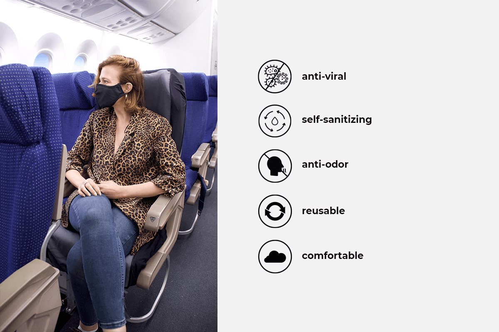

Health News of the World
This is the page that you can choose which video to watch from the drop down list
Hassan A.
As the pandemic spread, the perks of Amirzadeh's job diminished.Both overall and since Delta has been the prevalent variant, the risk of hospitalization was greater for unvaccinated adults in all age groups, but the risk gap is especially large among adults under 50.
The CDC analyzed 4,700 hospitalizations among adults between January 24 through July 24 through the COVID-19-Associated Hospitalization Surveillance Network (COVID-NET), which tracks laboratory-confirmed Covid-19 associated hospitalizations in 99 counties in 14 states representing about 10% of the US population.
The study has not yet been peer-reviewed or published. Another study also found elderly people with underlying conditions accounted for most severe breakthrough cases.
"Identifying who is more likely to develop severe COVID-19 illness after vaccination will be critical to ongoing efforts to mitigate the impact of these breakthrough infections," Dr. Hyung Chun, associate professor of cardiology at Yale School of Medicine, said in a statement about a study his team published Tuesday.
"These cases are extremely rare, but they are becoming more frequent as variants emerge and more time passes since patients are vaccinated."
Covid-19, but also the recent uptick in disruptive passengers. read more about this Their research -- which took place before the Delta variant dominated cases in the United States -- found the median age of those with severe Covid-19 symptoms was 80, more than half were overweight.
Most had cardiovascular disease, half had lung disease and half had diabetes. Half of the people in the study who tested positive for coronavirus did not have any symptoms of the infection and were in the hospital for something else altogether.
"It's clear that the vaccines are highly effective, and without them we would be facing a much deadlier pandemic," Chun said. "As effective as the vaccines are, with emerging variants and increasing cases of breakthrough infections, we need to continue to be vigilant in taking measures such as indoor masking and social distancing."
The demographics of those who are experiencing severe breakthrough cases of Covid-19 are similar to those who are at risk of a severe infection generally, Dr. Peter Hotez said to CNN's Kate Bolduan Wednesday.
Covid-19, but also the recent uptick in disruptive passengers. read more about this "I think what's happening is the vaccinations may be showing greater waning of immunity over time in those (high risk) populations and that may be the reason for it. That's why, for instance, Israel, when they first announced their booster plan to give a third immunization, they focused more on older individuals," said Hotez, a vaccinologist and dean of the National School of Tropical Medicine at Baylor College of Medicine.
But in terms of curbing the epidemic, the focus should be on reaching the unvaccinated population, he said. "For this Delta variant, it's so highly transmissible, we have to get to 85 to 90% of the whole population vaccinated. So we've got to figure out a way to reach those holdouts," Hotez said.
Covid-19, but also the recent uptick in disruptive passengers. read more about this Covid-19, but also the recent uptick in disruptive passengers. read more about this Covid-19, but also the recent uptick in disruptive passengers. read more about this Covid-19, but also the recent uptick in disruptive passengers. read more about this Covid-19, but also the recent uptick in disruptive passengers. read more about this
 Airplane passenger cabins are confined spaces shared by strangers. This increases your risk of catching COVID-19 and other diseases. So, what should we look for in a mask for flights and what are the makings of the best face mask for air travel? There are 4 main points to consider when looking for the best travel mask for you:
Other passengers’ behavior:
While the CDC’s guidelines require everyone to wear masks during flights, not everyone on the plane does this consistently or well.
Incorrect mask positioning, poor mask selection, overusing disposable masks and mask removal could all put you at risk of catching COVID-19 from other passengers.Air quality:
Air quality in the passenger cabin is comprised of 3 components: the number of people with COVID-19 on the plane and how crowded the passenger cabin is, the fresh air introduced from the outside of the plane into the passenger cabin and the filtered air coming from the planes’ filtration system.
Bear in mind that even the best aircraft HEPA filtration systems require several minutes to cover the entire volume of air on the plane, meaning there is always air that is unfiltered at any given moment. Also, these filtration systems are not working at full capacity before takeoff and after landing. This shifts the responsibility for your protection to you, through your mask selection.Comfort:
When we use masks for a short amount of time, we can put up with some degree of discomfort. However, selecting a mask for a long flight requires different standards. Keeping your mask on in the passenger cabin is important. Choosing a mask that is comfortable enough to keep on is key. Look for a mask that is breathable, comfortable and provides a good, snug fit.
The CDC recommends fabric masks that include at least 2 layers of tightly woven, breathable fabric. The mask should provide proper fit so no air leaks out. The mask should also have an adjustable nose wire so that you can adjust the mask to your face. A mask like the SonoMask™ Pro covers all these requirements and goes way beyond the acceptable level with its award-winning active protection . The SonoMask™ Pro offers 3 layers of protection: an inner and outer layer made from soft, breathable poly/cotton blend as well a middle layer of non-woven filter.
It has an adjustable nose wire to improve the seal and prevent your glasses from fogging up so you can read or use your phone (on airplane mode) throughout your flight. It also comes with a fitted chin design and 4 sizes ranging from kids to adults’ XL so that everyone has access to Sonovia’s high protection mask.
Extra protection:
The SonoMask™ Pro was developed with top-notch protection in mind, offering you 3 X 3 protection. The first line of defense in the SonoMask™ Pro comes from its extremely high filtration performance, offering an impressive 97% efficacy against 3-micron particles with the testing to back up these numbers . The second line of protection comes from the innovation behind the SonoMask™ Pro.
The Pro™ was made to deliver active protection on top of the passive filtration offered to some extent by all masks. The fabric in the SonoMask™ Pro is embedded with zinc. Zinc is known for its active antiviral, antibacterial and antifungal properties. The zinc embedded in the SonoMask™ Pro’s fabric maintains its functionality and is proven to neutralize viruses and their variants as well as bacteria with over 99% efficacy.
The third line of protection of the SonoMask Pro™ is that it auto-cleans itself so that it does not get contaminated like standard disposable masks no matter how long your trip takes. And because the mask doesn’t become contaminated, you only really need to wash it as needed if it becomes dirty or stained. With the SonoMask™ Pro you get high-protection and low-maintenance!